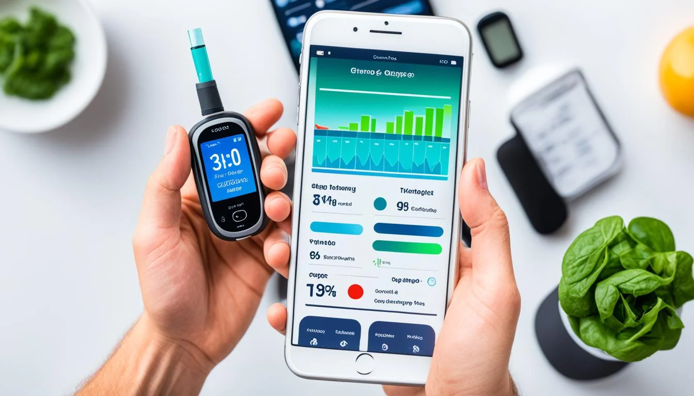

El control de la glucemia no es simplemente un número en una prueba; es un indicador del estado general de salud de una persona con diabetes
Control de Glucemia: monitoreo y estrategias para la diabetes
La diabetes es una enfermedad crónica caracterizada por niveles elevados de glucosa en
sangre, lo que puede resultar de la deficiencia de insulina o de la resistencia a su acción.
Existen dos tipos principales: la diabetes tipo 1, donde el páncreas no produce insulina, y
la diabetes tipo 2, que se asocia a factores como la obesidad y la inactividad física.
El control de la glucemia no es simplemente un número en una prueba; es un indicador del
estado general de salud de una persona con diabetes. La implementación de estrategias
efectivas, el monitoreo constante y la comunicación abierta con el equipo de salud, son
factores determinantes para asegurar una vida plena y saludable. Cada individuo es
diferente, y los objetivos de glucemia deben ser personalizados según las necesidades y
circunstancias de cada paciente.
Una glucemia bien controlada no solo previene complicaciones a largo plazo, sino que también
impacta directamente en la calidad de vida diaria de las personas que viven con esta
condición. Ignorar su importancia puede llevar a consecuencias físicas, desde confusión y
dificultad para concentrarse hasta daños permanentes en órganos vitales como sistema
urinario (riñones), el sistema nervios y corazón a lo largo del tiempo. Por ello, el
seguimiento regular y la toma de conciencia sobre los niveles de glucemia son cruciales.
La diabetes, tipo 1, tipo 2 o gestacional, requiere un enfoque proactivo para mantener la
glucemia dentro de rangos saludables. Un registro meticuloso de los resultados de la
glucemia es indispensable para que el equipo de salud pueda evaluar la respuesta al
tratamiento, realizar ajustes en la medicación o modificar las recomendaciones dietéticas y
de estilo de vida. Este proceso colaborativo entre el paciente y el profesional de la salud
es vital para optimizar el control de la glucemia y minimizar el riesgo de complicaciones.
Además, la tecnología ha revolucionado el monitoreo de la glucemia, ofreciendo herramientas
cada vez más accesibles y convenientes para el paciente.
Existen dos métodos principales para medir la glucemia: el medidor de glucosa en sangre
(MGS) y el monitor continuo de glucosa (MCG). El MGS, también conocido como glucómetro,
requiere la utilización de tiras reactivas y una pequeña cantidad de sangre obtenida de una
uña o dedo.
Los MCG (medidor de glucosa en sangre), por otro lado, son dispositivos que miden la
glucemia de forma continua a través de un sensor insertado debajo de la piel. Estos
monitores ofrecen una visión más completa de la glucemia, incluyendo tendencias y alertas
tempranas de hipoglucemia o hiperglucemia. Si bien los MCG ofrecen una ventaja
significativa, hay que recordar que requieren un cable que se conecta a un receptor o a un
teléfono inteligente, lo que puede limitar la movilidad.
Técnica para realizar los controles de glucemia con glucómetro
Lavar las manos: Es fundamental para evitar la contaminación de la muestra de sangre.
Insertar la tira de prueba: Colocar la tira de prueba en el medidor de
glucosa y asegurarse de que la muestra de sangre toque la tira de prueba correctamente.
Uso de dispositivos de punción: Utilizar dispositivos de punción con
resorte para reducir el dolor y mejorar la calidad de la muestra.
Registro de resultados: Llevar un registro de las mediciones y anotar la hora y fecha de
cada medición para un seguimiento adecuado.
Consulta médica: Acudir a un profesional de la salud para establecer metas personalizadas de
glucosa en sangre y recibir orientación sobre el uso del medidor de glucosa.
Técnica para realizar los controles de glucemia con MCG
El sistema de MCG le brinda un panorama más amplio de las tendencias de glucosa. Puede
proporcionar información valiosa en momentos cruciales del día, por ejemplo, antes y durante
el ejercicio, antes de conducir o en medio de la noche, También puede compartir estos datos
con una bomba de insulina integrada o una pluma inteligente de insulina para brindarle
información con la que pueda tomar medidas.
1: Preparación
Selecciona el Sitio de Inserción: Antes de comenzar, elige un área de tu cuerpo para
insertar el sensor. Las ubicaciones comunes incluyen la parte posterior del brazo, el
abdomen y la parte superior del glúteo. Limpia la piel con alcohol y deja que se seque por
completo.
Reúne los Materiales: Asegúrate de tener todo lo necesario para la instalación, que suele
incluir el dispositivo del medidor de glucosa continuo, el sensor, el aplicador (si se
proporciona) y suministros de limpieza, como alcohol y gasas estériles.
2: Inserción del Sensor
Prepara el Sensor: Si el sensor requiere preparación previa, sigue las instrucciones del
fabricante. Esto puede incluir retirar el protector del adhesivo y asegurarse de que el
sensor esté listo para la inserción.
Utiliza el Aplicador (si es necesario): Si el sensor viene con un aplicador, coloca el
sensor en el aplicador según las indicaciones. Esto facilitará la inserción del sensor en la
piel.
Inserta el Sensor: Sigue las instrucciones del fabricante para insertar el sensor en el área
seleccionada de tu cuerpo. Utiliza un movimiento firme y rápido para asegurar una inserción
adecuada. Si usas un aplicador, presiona el botón para liberar el sensor en la piel.
Confirma la Inserción: Una vez que el sensor esté en su lugar, asegúrate de que esté
firmemente adherido a la piel. Presiona suavemente alrededor del sensor para asegurarte de
que esté bien colocado.
3: Configuración del Dispositivo
Enciende el Dispositivo: Activa el medidor de glucosa continuo según las instrucciones del
fabricante. Esto puede implicar presionar un botón de encendido o abrir la aplicación en tu
teléfono inteligente.
Configura el Dispositivo: Sigue las indicaciones en la pantalla o en la aplicación para
configurar tu dispositivo. Esto puede incluir emparejarlo con tu teléfono inteligente a
través de Bluetooth y configurar tus preferencias de visualización y notificación.
Calibra el Sensor (si es necesario): Algunos sensores requieren calibración inicial para
garantizar lecturas precisas. Sigue las instrucciones específicas del fabricante para
realizar este proceso. Por lo general, implica introducir una muestra de sangre en el
medidor de glucosa continuo y confirmar la calibración en la pantalla.
Confirma la Conexión: Verifica que el dispositivo esté correctamente conectado al sensor y
que esté recibiendo lecturas de glucosa de forma continua. Esto puede confirmarse mediante
la visualización de datos en la pantalla del dispositivo o en la aplicación móvil.
4: Prueba y Ajustes
Prueba de Funcionamiento: Realiza una prueba de funcionamiento del dispositivo para
asegurarte de que esté funcionando correctamente. Verifica que esté mostrando lecturas
precisas y que esté enviando datos a tu teléfono inteligente, si corresponde.
Ajusta la Configuración (si es necesario): Si encuentras algún problema con la configuración
o el funcionamiento del dispositivo, consulta el manual del usuario o comunícate con el
soporte técnico del fabricante para obtener ayuda. Es importante asegurarte de que el
dispositivo esté configurado correctamente para tu uso y comodidad.
5: Seguimiento y Mantenimiento
Registra tus Lecturas: Lleva un registro de tus lecturas de glucosa y cualquier otra
información relevante, como la hora del día, las comidas que consumes y cualquier síntoma
que experimentes. Esto te ayudará a tener una visión más completa de tu salud y a
identificar patrones a lo largo del tiempo.
Mantenimiento del Dispositivo: Sigue las recomendaciones del fabricante para el
mantenimiento y cuidado del dispositivo. Esto puede incluir limpieza regular, cambio de
sensores según sea necesario y almacenamiento adecuado del dispositivo cuando no esté en
uso.
Además de llevar un registro de la glucemia, es importante monitorear otros indicadores de
salud, como la presión arterial, el colesterol, el peso y los factores que influyen sobre
ellos. Estos factores están interrelacionados y pueden afectar el control de la glucemia. Un
enfoque holístico que abarque todos los aspectos de la salud puede ayudar a prevenir
complicaciones y mejorar la calidad de vida de las personas con diabetes.
Fuentes :
- https://medidordeglucosa.com/
- https://www.medtronicdiabetes.com/
- https://lugoneseditorial.com.ar/
- https://laboratorios.aarg.ar/